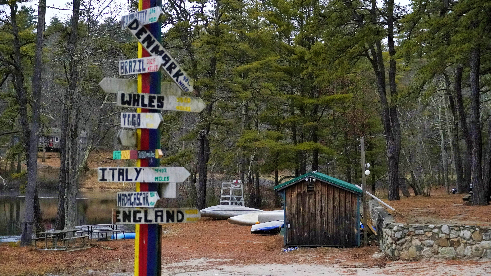
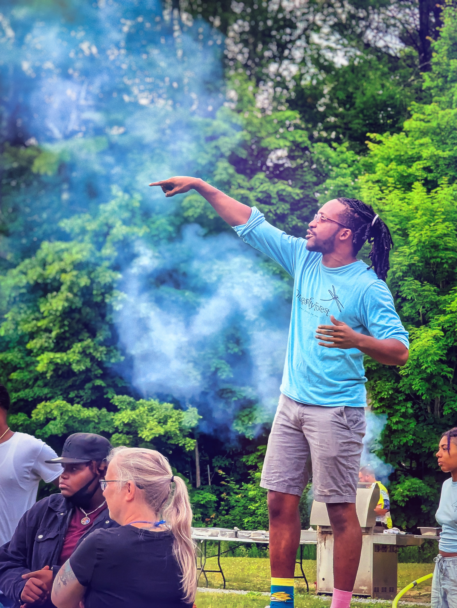
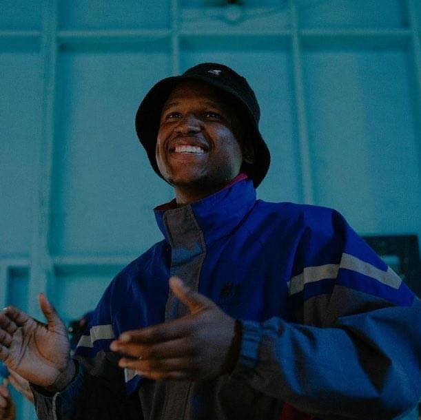

Radical Trust
A community where candor, care, and accountability can coexist without trading each other off.

Camp Inno is a premium summer experience where creativity, innovation, and belonging actually live in the same place — designed on purpose, built with care.
Camp Inno exists to make high-trust, high-creativity camp experiences feel possible, welcoming, and worth building. Four values carry the work.
A community where candor, care, and accountability can coexist without trading each other off.
We support people as individuals instead of forcing everyone into the same camp mold.
Ideas that repair, expand access, and move past surface-level novelty into real craft.
We reduce the real barriers that keep people from getting to camp and belonging there.
Campers choose a track and dig in. The work is real, the tools are real, and the people around them are building alongside them.
Code, robotics, and digital problem-solving for campers who want to build.
Film, photography, design, and storytelling for campers who want to create.
Big ideas, financial literacy, and venture thinking for campers who want to lead.
“Creative energy, time outdoors, and the kind of momentum that lingers after camp ends.”— Field notes, June
Camp leadership, creative direction, and technical craft — working in the same room, not in separate lanes.

Camp leader, youth developer, and builder shaping the vision for what Camp Inno can become.
Creative technologist translating Camp Inno's ideas into systems, storytelling, and digital craft.

Creative director bringing media instincts, atmosphere, and visual identity into the camp's future shape.
If you want updates as the camp takes shape — session news, early enrollment, field dispatches — sign up with the interest form.